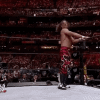
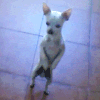

기다려가 아직 미숙한 강아지.mp4
댓글
주댕이 검은 친구들이 참 귀엽드라.

저 나이에 저 정도면 잘하는거임.
제자리에 있는게 어디야 ㅋㅋㅋㅋㅋㅋ
기여웡

그 일본에 밥그릇으로 점점 다가오는 시바견영상 생각나네 ㅋㅋㅋ
기다려 하고 가만히 안있으면
먹이 한톨도 안주면됨 ㅇㅇ
헐 짱귀여워 ㅋㅋㅋㅋㅋㅋㅋ
어후 진짜 댕댕이는 사랑이다.

ㅋㅋㅋㅋㅋㅋㅋㅋㅋㅋㅋㅋㅋㅋㅋㅋㅋㅋㅋㅋㅋㅋㅋㅋㅋㅋㅋㅋㅋㅋㅋㅋㅋㅋㅋ
탭댄스 추네 ㅋㅋ
하 쉬이발 못참겠다
바로 꼬순내폭렬드링킹배방구
미치겠네 ㅋㅋㅋㅋㅋ
존나 귀엽다